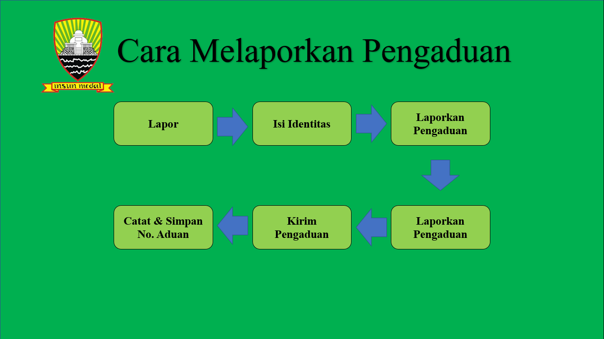

Cara Melapor

Cara Melapor
1. Klik menu "Lapor" untuk melaporkan pengaduan baru.
2. Masukan identitas diri
3. Laporkan Pengaduan
*Semua kotak wajib diisi.
4. Setelah selesai mengisi, silakan klik tombol "Kirim Pengaduan" untuk melanjutkan proses pelaporan Anda.
5. Catat dan Simpan dengan baik nomor pengaduan yang Anda peroleh saat membuat pengaduan untuk mengetahui status/tindak lanjut pengaduan yang Anda sampaikan.